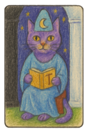
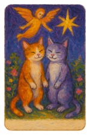
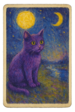

Спросите о важном
От отношений и чувств до выбора, который давно откладывается.
Личный диалог с внутренним миром
Inner Mirror соединяет символические образы, интуицию и искусственный интеллект, чтобы помочь вам услышать себя и посмотреть на ситуацию с новой стороны.



✦ ✧Зеркало, которое не судит
Вопросы, символы и спокойные подсказки помогают назвать чувства, заметить внутренние противоречия и увидеть несколько возможных направлений.
От отношений и чувств до выбора, который давно откладывается.
Интуитивно откройте символы из выразительных колод, включая карты с котиками.
Искусственный интеллект связывает вопрос и образы в короткий ответ на выбранном языке.
История раскладов и саморефлексий помогает возвращаться к важным мыслям.
Не готовый приговор
Inner Mirror не обещает точных предсказаний и не решает за вас. Символы работают как зеркало: отражают темы, эмоции и вопросы, которые уже присутствуют внутри.
Вы сохраняете свободу выбора. Используйте интерпретацию как повод остановиться, проверить ощущения и принять собственное решение.
Три спокойных шага
Лучше спросить о своих чувствах, возможностях и действиях, а не требовать однозначного «да» или «нет».
Выберите тему, колоду и карты без спешки — здесь нет неправильного выбора.
Заметьте, что откликается, что вызывает сопротивление и какой следующий шаг кажется честным.
Читать и размышлять
Три коротких материала о том, как обращаться к символам бережно, осознанно и без идеи предопределённого будущего.
Необычный образ нарушает привычный ход мыслей. Рассматривая карту, мы начинаем замечать собственные ассоциации: надежду, тревогу, конфликт или желание перемен.
Ценность не в единственно верной расшифровке, а в вопросах, которые появляются. Что именно привлекло внимание? Как это связано с текущей ситуацией? Такой диалог превращает карту в начало размышления.
Будущее зависит от множества решений, обстоятельств и людей. Ни одна карта не может надёжно сообщить, что обязательно произойдёт или что чувствует другой человек.
Зато символический расклад может показать возможные сценарии и ваше отношение к ним. Это приглашение подумать, а не инструкция. Решение и ответственность всегда остаются у вас.
Полезный вопрос возвращает внимание к тому, на что вы можете повлиять. Вместо «Будем ли мы вместе?» попробуйте: «Что мне важно понять об этих отношениях?»
Вместо «Что произойдёт?» спросите: «Какие возможности и риски я сейчас не замечаю?» Открытая формулировка оставляет место для выбора и делает рефлексию практичной.
Важно помнить
Inner Mirror не заменяет медицинскую, психологическую, юридическую или финансовую помощь. Не основывайте важные решения только на интерпретации карт. Если ситуация влияет на здоровье или безопасность, обратитесь к квалифицированному специалисту.
Inner Mirror
Скачайте приложение для iPhone и начните первую сессию бесплатно.
Загрузите вApp Store